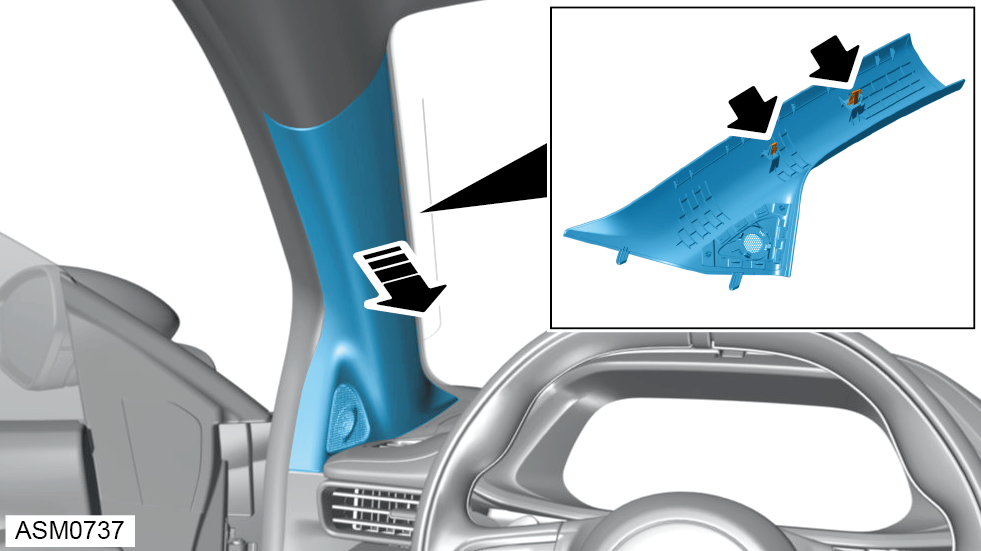
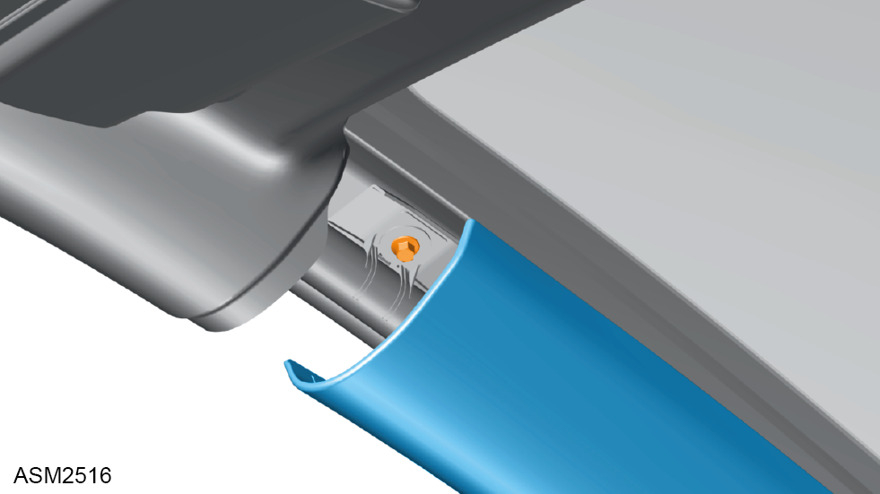
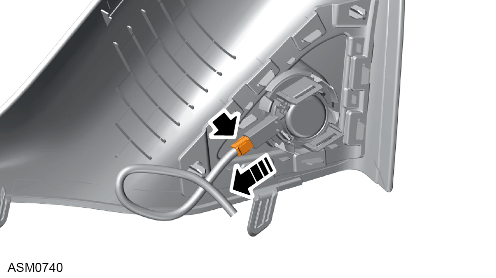
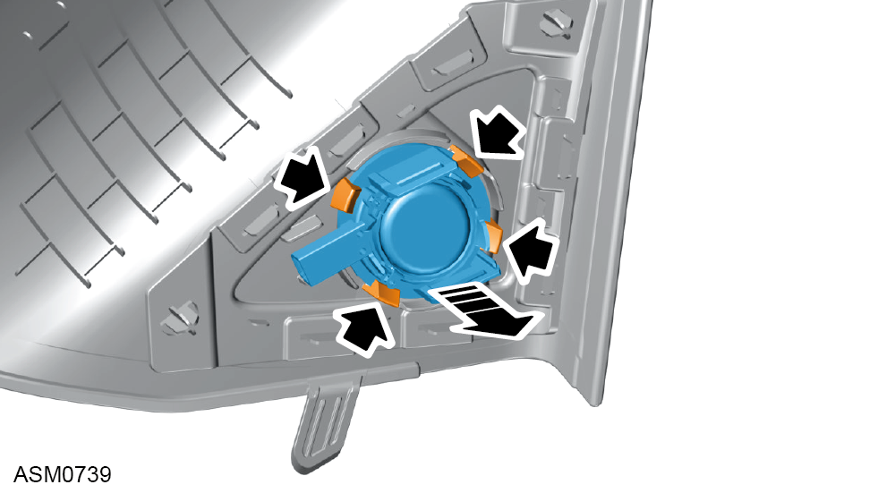
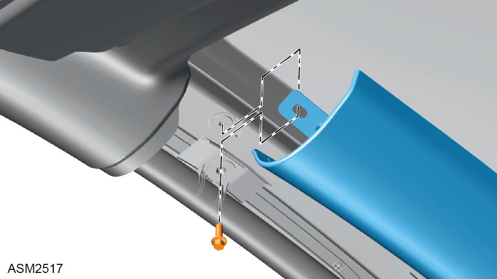

A Pillar Trim - Left Side
Print
Operation Code: 15.07.01-02
Removal

- Carefully pull A pillar trim outwards, then rearwards to disengage clips (x2) securing A pillar trim to vehicle.
 CAUTION: Gently pull A pillar trim out and rearwards to prevent damage to the dog house.
CAUTION: Gently pull A pillar trim out and rearwards to prevent damage to the dog house.
NOTE: Windscreen glass removed for image clarity.

- Remove M6x18 bolt securing curtain airbag and A pillar tether strap to vehicle.
- Remove A pillar trim to access harness connector.

- Disconnect harness connector from tweeter speaker.
- Remove A pillar trim.
Do not carry out further disassembly if component is removed for access only.

- Remove tweeter speaker from A pillar trim.
Installation
- Installation is the reverse of removal procedure.
- Position A pillar trim lower locating mounting tabs (x2) to instrument panel.

- Slightly pull down airbag curtain down and install A pillar tether strap between airbag curtain mounting and the vehicle A
pillar.
CAUTION: Take care not to rotate airbag curtain. Make sure retaining plate is orientated correctly and positioned flush against vehicle A pillar.
- Install M6x18 bolt securing curtain airbag and A pillar tether strap to vehicle A pillar. Torque 6 Nm.
NOTE: Make sure bolt passes through A pillar tether strap.
- Mark bolt with paint pen to indicate torque has been applied.
- Engage clips (x2) securing A pillar trim to vehicle A pillar.